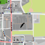

Gärtnerei
Öffnungszeiten
Mo: ⁣
08.30 - 12.30
Di - Do: ⁣
08.30 - 12.30 & 13.30 - 16.30
Fr: ⁣
08.30 - 12.30
Verkauf
Frisches Gemüse und Obst wird im
MühlenMarkt
an der Gemüse-/Obstabteilung verkauft.
Position auf der Karte

Mehr interessante Orte entdecken
↠Startseite
↠Karte